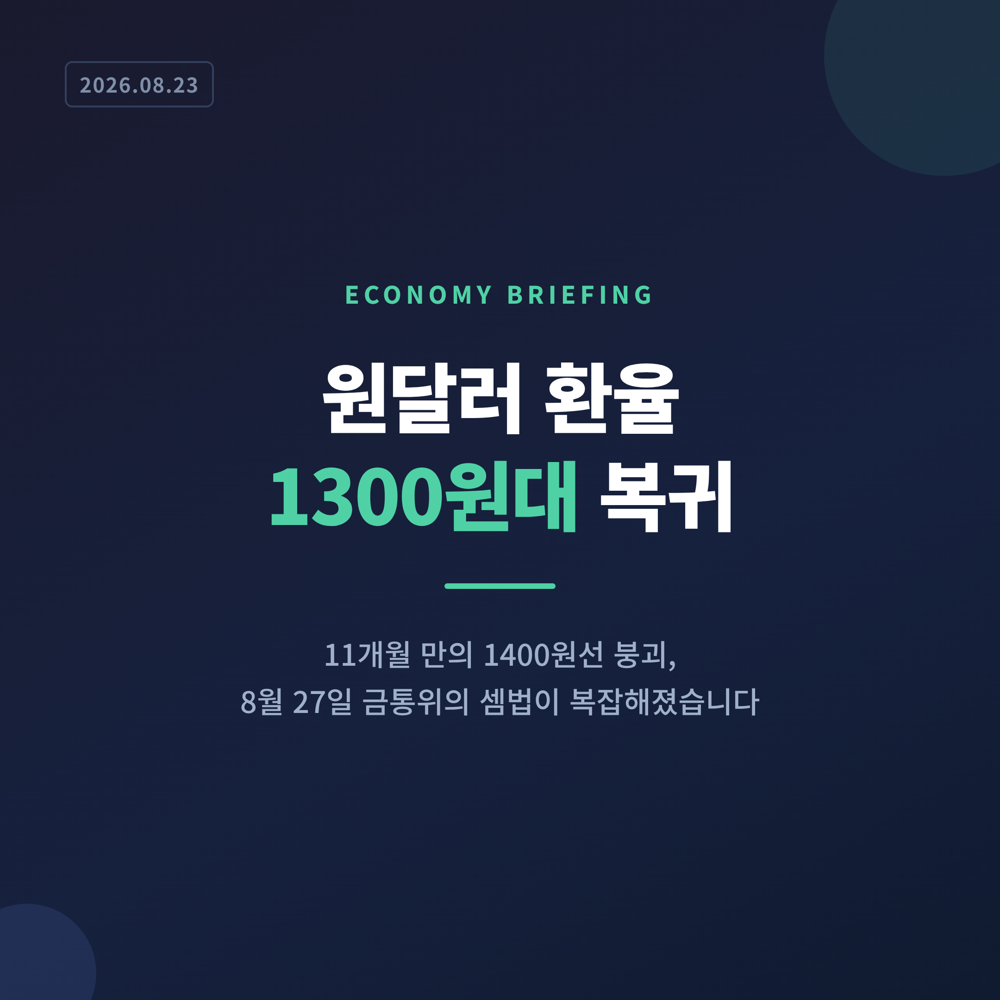
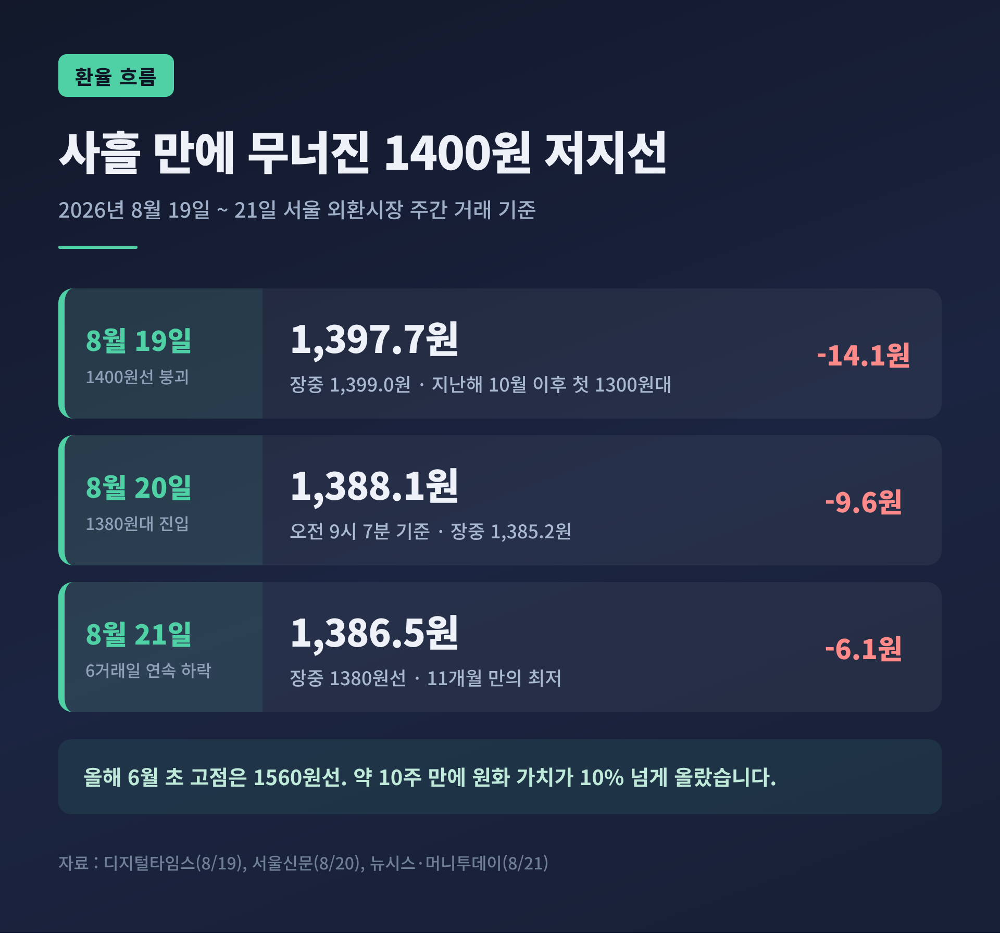
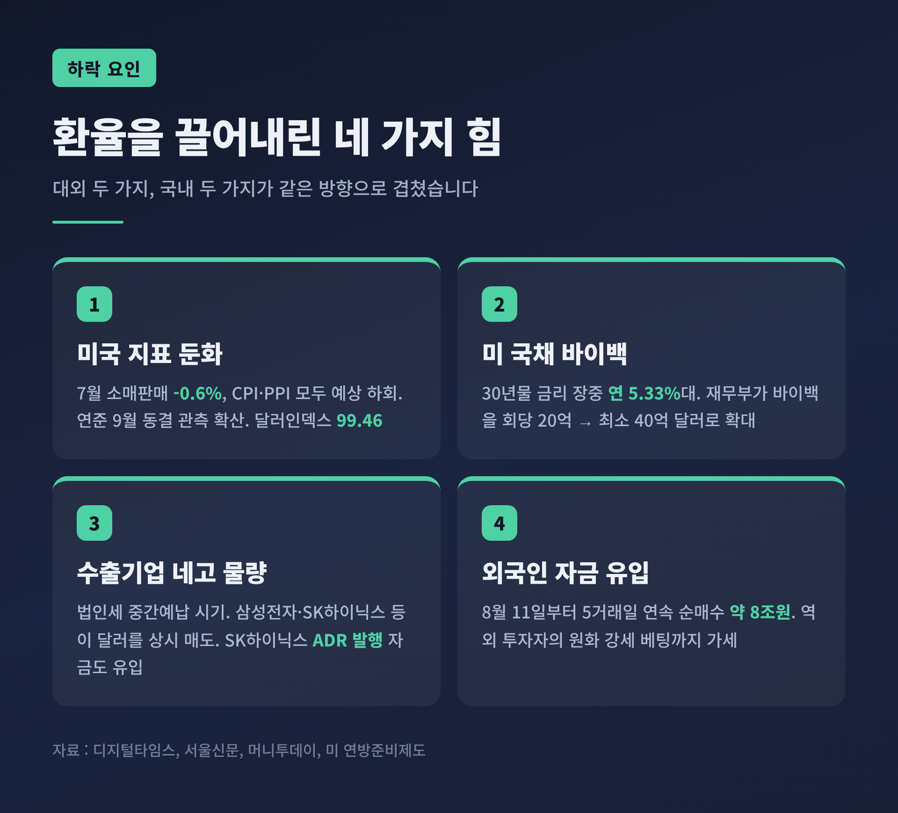
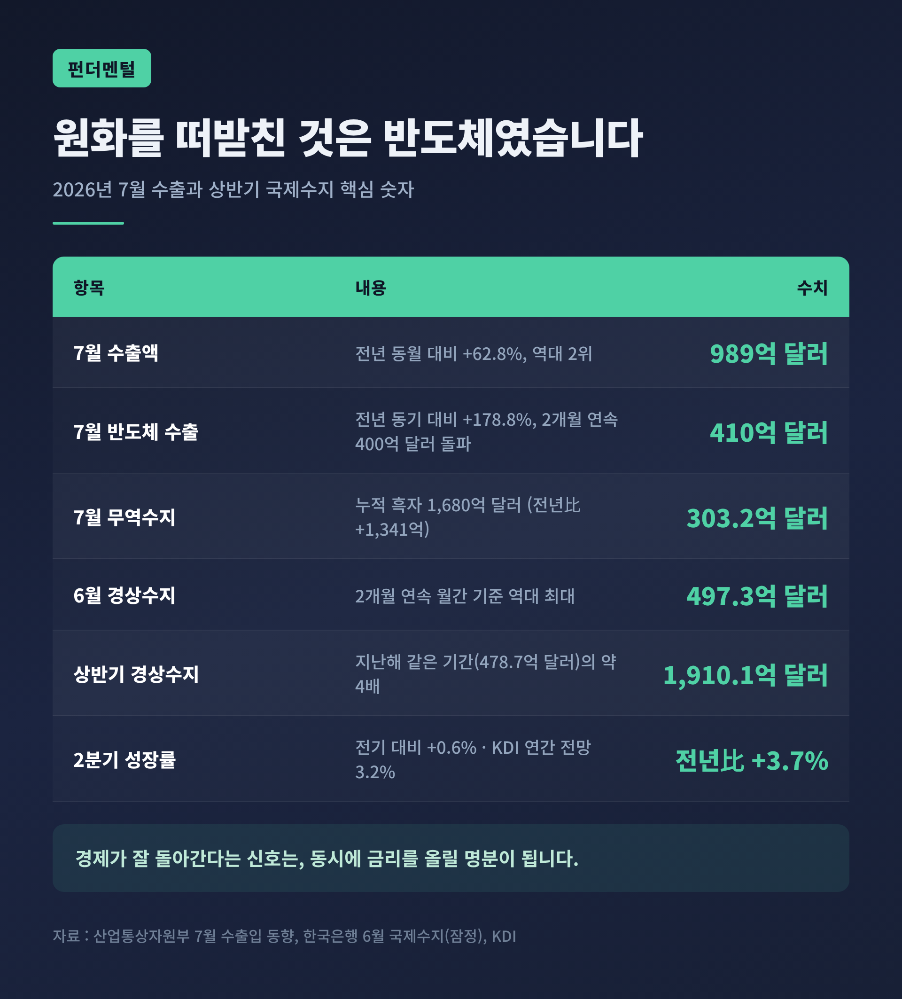
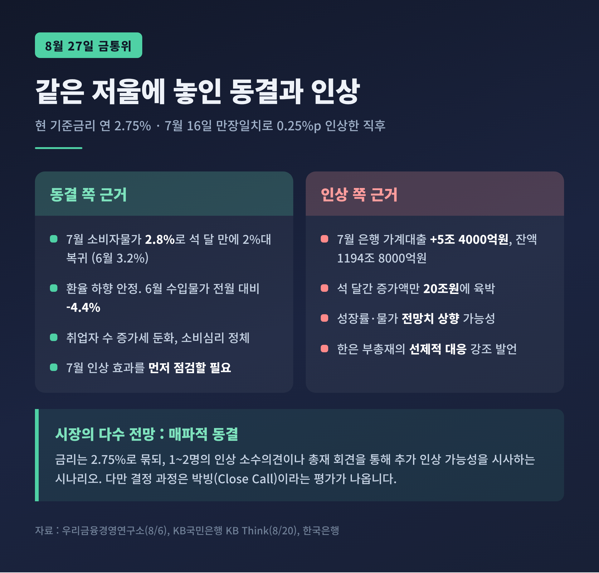
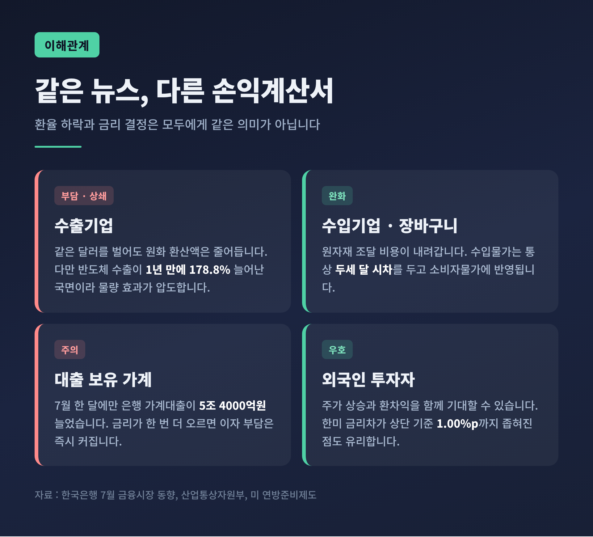

원달러 환율 1300원대 복귀, 8월 27일 금통위 셈법이 복잡해졌습니다

이번 글에서는 원달러 환율이 11개월 만에 1300원대로 내려온 배경과, 나흘 뒤 열리는 한국은행 금융통화위원회의 고민을 정리해 보겠습니다. 환율이 내려간 것은 분명 반가운 소식입니다. 그런데 그 반가움이 오히려 금리 결정을 어렵게 만들었습니다.
세 줄 요약
- 2026년 8월 19일 원달러 환율은 14.1원 내린 1397.7원에 주간 거래를 마쳤습니다. 주간 종가가 1400원 아래로 내려간 것은 지난해 9월 이후 약 11개월 만입니다. 21일에는 1386.5원까지 밀리며 6거래일 연속 하락했습니다.
- 한국은행은 7월 16일 금통위에서 기준금리를 연 2.50%에서 2.75%로 올렸습니다. 2023년 1월 이후 3년 6개월 만의 인상이었고, 금통위원 7명 전원이 찬성한 만장일치였습니다.
- 8월 27일 금통위를 앞두고 시장의 다수 전망은 '동결'입니다. 다만 물가와 가계부채가 남아 있어, 인상 소수의견이 붙는 '매파적 동결'이 될 것이라는 관측이 우세합니다.
1400원 벽이 무너진 사흘
8월 19일 서울 외환시장의 출발은 평범했습니다. 원달러 환율은 전 거래일보다 1.5원 오른 1413.3원으로 문을 열었습니다.
그런데 곧바로 방향이 꺾였습니다. 정오 무렵 1399.0원까지 떨어지면서, 지난해 10월 2일 이후 처음으로 장중 1300원대에 들어섰습니다. 오후에도 낙폭은 유지됐고, 종가는 전 거래일보다 14.1원 내린 1397.7원으로 확정됐습니다.
다음 날 흐름은 더 뚜렷해졌습니다. 20일 오전 9시 7분 기준 환율은 1388.1원, 장중에는 1385.2원까지 내려갔습니다. 21일에는 6.1원 더 빠진 1386.5원에 주간 거래를 마쳤습니다. 6거래일 연속 하락이었습니다.
숫자만 보면 20원 남짓한 움직임입니다. 그러나 시장이 주목한 것은 폭이 아니라 선(線)이었습니다. 1400원은 지난 열 달 동안 한 번도 아래로 뚫리지 않았던 심리적 저지선이었기 때문입니다.

거슬러 올라가면 낙폭은 훨씬 큽니다. 환율은 올해 6월 초 1560원선을 넘어서며 고점을 찍었습니다. 약 10주 만에 달러 대비 원화 가치가 10% 넘게 오른 셈입니다. 지난해 가을부터 이어진 고환율 국면이 처음으로 방향을 바꿨다는 신호였습니다.
환율을 끌어내린 네 가지 힘
첫째는 미국입니다. 7월 소매판매가 전월보다 0.6% 줄어 시장 전망치를 크게 밑돌았습니다. 소비자물가 상승률은 둔화했고, 생산자물가도 예상을 하회했습니다. 연방준비제도가 9월에 금리를 올리기 어려울 것이라는 관측이 힘을 얻었습니다. 주요 6개국 통화 대비 달러 가치를 나타내는 달러인덱스는 19일 오후 99.46까지 내려갔습니다.
연준은 이미 7월 28~29일 회의에서 기준금리를 3.50~3.75%로 동결했습니다. 표결은 9 대 3이었습니다. 세 위원이 인상을 주장했지만, 케빈 워시 의장을 포함한 다수는 관망을 택했습니다.
둘째는 미 국채시장입니다. 30년 만기 국채금리가 재정건전성 우려로 8월 18일 장중 연 5.33%대까지 올랐습니다. 2007년 이후 최고치였습니다. 미 재무부는 장기 국채 바이백 규모를 회당 20억 달러에서 최소 40억 달러로 두 배 늘리겠다고 밝혔습니다. 금리가 진정되자 달러도 힘을 잃었습니다.
셋째, 그리고 가장 직접적인 힘은 국내에 있었습니다. 8월은 법인세 중간예납 기간입니다. 삼성전자와 SK하이닉스 같은 수출기업이 원화를 마련하려고 보유 달러를 대거 내놓았습니다. 시장에서는 이 흐름의 성격이 달라졌다고 봅니다. 예전에는 월말에 몰아서 팔았습니다. 지금은 반도체 기업을 중심으로 상시 출회되는 구조로 바뀌었습니다. SK하이닉스의 미국주식예탁증서 발행 자금까지 더해졌습니다.
넷째는 외국인 자금입니다. 외국인은 8월 11일부터 5거래일 연속 국내 증시에서 순매수하며 약 8조원어치를 사들였습니다. 21일에는 삼성전자와 SK하이닉스의 주주환원에 따른 달러 매도 기대와, 역외 투자자의 원화 강세 베팅까지 겹쳤습니다.

박상현 iM증권 애널리스트는 이 흐름을 두고 "미 연준의 금리 인상 확률이 낮아진 가운데 최근 외국인의 국내 주식 순매수세가 이어지고 주가도 반등하면서 원·달러 환율의 1300원대 진입을 위한 흐름이 강화되고 있다"고 진단했습니다.
원화를 떠받친 것은 결국 반도체였습니다
환율은 심리로 움직이지만, 방향은 결국 실적이 정합니다.
7월 수출액은 989억 달러였습니다. 전년 동월 대비 62.8% 늘어난 역대 2위 기록입니다. 6월에 월간 기준 사상 처음으로 1000억 달러를 넘어선 데 이은 성과였습니다. 이 가운데 반도체가 410억 달러를 차지했습니다. 1년 전보다 178.8% 급증한 수치이고, 두 달 연속 400억 달러를 넘겼습니다.
무역수지는 303억 2000만 달러 흑자였습니다. 7월까지 누적 무역흑자는 1680억 달러로, 전년 같은 기간보다 1341억 달러 늘었습니다.
경상수지는 더 극적입니다. 6월 경상수지는 497억 3000만 달러 흑자로, 5월(386억 1000만 달러)에 이어 두 달 연속 월간 기준 역대 최대를 새로 썼습니다. 상반기 누적 흑자는 1910억 1000만 달러입니다. 지난해 같은 기간 478억 7000만 달러의 약 네 배입니다.
김영환 한국은행 경제통계1국장은 "유례없는 반도체 수출 호조에 힘입어 상품수지 흑자 증가가 경상수지 흑자 증가의 대부분을 차지했다"고 설명했습니다.

성장률도 예상을 웃돌았습니다. 2분기 성장률은 전기 대비 0.6%, 전년 동기 대비 3.7%였습니다. 한국개발연구원은 올해 성장률 전망치로 3.2%를 제시했습니다. 한국은행이 5월 말 수정 경제전망에서 내놓은 2.6%보다 눈에 띄게 높습니다.
여기서 딜레마가 시작됩니다. 경제가 잘 돌아간다는 신호는 금리를 올릴 명분이 되기 때문입니다.
7월에는 만장일치로 올렸습니다
한국은행은 7월 16일 금통위에서 기준금리를 연 2.50%에서 2.75%로 0.25%포인트 인상했습니다. 2023년 1월 이후 3년 6개월 만의 인상이었습니다. 지난해 5월 인하 이후 이어온 동결 기조를 접고, 방향을 긴축으로 튼 결정이었습니다.
주목할 대목은 표결입니다. 금통위원 7명 전원이 찬성한 만장일치였습니다.
결정문은 이유를 이렇게 적었습니다. 성장세가 수출과 투자를 중심으로 강화되고 있고, 물가상승률은 상당 기간 목표 수준을 웃돌 것으로 보이며, 금융안정 측면의 리스크도 지속되고 있다는 것이었습니다.
이후 시장에는 다른 긴장이 생겼습니다. 한은 부총재가 기자간담회에서 통화정책의 선제적 대응을 강조하자, 두 번 연속 올리는 이른바 '백투백 인상' 가능성이 거론되기 시작했습니다.
금통위 앞에 놓인 저울, 어느 쪽이 무거운가
8월 27일 금통위를 앞둔 시장의 다수 전망은 동결입니다. 다만 근거는 결코 한쪽으로 기울어 있지 않습니다.
동결을 뒷받침하는 첫 번째 근거는 물가입니다. 7월 소비자물가 상승률은 전년 동월 대비 2.8%로, 6월 3.2%에서 0.4%포인트 내려왔습니다. 석 달 만의 2%대 복귀입니다. 근원물가는 2.6% 수준이었습니다. 물가가 목표인 2%를 웃도는 것은 사실이지만, 금리를 급하게 올려야 할 만큼 튀어 오르지는 않았습니다.
두 번째는 환율입니다. 고환율은 그동안 인상론의 강력한 근거였습니다. 그 근거가 지금은 스스로 약해졌습니다. 6월 수입물가는 원화 기준으로 전월 대비 4.4% 떨어졌습니다. 2022년 12월 이후 3년 6개월 만의 최대 낙폭입니다. 수입물가는 통상 두세 달 시차를 두고 소비자물가에 반영됩니다. 환율이 잡히면 물가도 시간을 두고 따라 내려온다는 뜻입니다.
세 번째는 고용과 심리입니다. KB국민은행은 반도체에 편중된 성장 탓에 취업자 수 증가세가 둔화하고 있고, 소비심리도 정체돼 있으며, 기대인플레이션 상승도 제한적이라고 분석했습니다. 수요가 물가를 밀어 올리는 구조가 아직 확인되지 않는다는 진단입니다.

반대편도 만만치 않습니다.
가장 무거운 것은 가계부채입니다. 7월 말 은행권 가계대출 잔액은 1194조 8000억원으로 한 달 새 5조 4000억원 늘었습니다. 6월 증가폭(7조 6000억원)보다는 줄었지만, 지난해 7월(2조 7000억원)의 두 배 수준입니다. 최근 석 달간 늘어난 금액만 20조원에 육박합니다. 주택담보대출과 신용대출이 동시에 불어나는 국면에서, 당국이 선제적으로 움직일 유인은 분명히 존재합니다.
전망치 상향도 변수입니다. 우리금융경영연구소는 8월 금통위에서 성장률과 물가 전망치가 큰 폭으로 올라갈 가능성을 지적했습니다. 전망치가 오르면 인상 명분도 함께 커집니다.
그래서 나온 절충안이 '매파적 동결'입니다. 금리는 그대로 두되, 1~2명의 인상 소수의견을 붙이거나 신현송 총재가 기자회견에서 추가 인상 가능성을 강하게 시사하는 방식입니다. 우리금융경영연구소는 이 시나리오를 가장 유력하게 봤습니다. KB국민은행도 동결을 전망하면서, 다만 결정 과정은 박빙일 것이라고 덧붙였습니다.
채권시장은 이미 앞서 움직였습니다. 국고채 3년물 금리는 3.8%까지 올랐고, 시장은 최종금리 3.5% 도달을 상당 부분 반영하고 있다는 분석이 나옵니다.
같은 뉴스, 다른 손익계산서
환율 하락과 금리 결정은 모두에게 같은 의미가 아닙니다.
수출기업에게 환율 하락은 원칙적으로 부담입니다. 같은 달러를 벌어도 원화로 바꾸면 손에 쥐는 금액이 줄기 때문입니다. 다만 지금은 물량이 압도합니다. 반도체 수출이 1년 만에 178.8% 늘어난 상황에서, 환율 20원의 무게는 상대적으로 가볍습니다.
수입기업과 가계에게는 반대입니다. 원자재를 사들이는 비용이 줄고, 그 효과는 몇 달 뒤 장바구니 물가로 돌아옵니다. 고환율이 밀어 올렸던 생활비 압력이 조금씩 풀리는 구간입니다.
대출을 안고 있는 가계에게 8월 27일은 다른 무게로 다가옵니다. 이미 7월 한 달에만 은행 가계대출이 5조원 넘게 늘었습니다. 여기에 금리가 한 번 더 오르면 이자 부담은 즉시 커집니다.
외국인 투자자는 원화 강세를 반깁니다. 주가가 오르는 동시에 환차익까지 기대할 수 있기 때문입니다. 한국 금리가 2.75%, 미국 상단이 3.75%로 격차가 1%포인트까지 좁혀진 점도 자금 유입에 우호적입니다.

앞으로 무엇을 지켜봐야 하나
첫째, 8월 27일 결정문의 문장입니다. 동결이라는 결과보다 중요한 것은 소수의견이 몇 명인지, 그리고 총재가 다음 회의를 어떻게 예고하는지입니다. 같은 동결이라도 뉘앙스에 따라 시장 금리는 다르게 움직입니다.
둘째, 함께 발표될 수정 경제전망입니다. 성장률과 물가 전망치가 얼마나 올라가는지가 연내 추가 인상 여부를 가늠할 잣대가 됩니다.
셋째, 환율이 1300원대에 안착하느냐입니다. 낙관론과 신중론이 함께 있습니다. 경상수지와 성장률 같은 펀더멘털, 외국인 자금 유입, 엔화 강세는 추가 하락을 뒷받침합니다. 반면 미국 장기 국채금리가 여전히 불안하고, 국내 투자자의 해외투자 수요도 이어지고 있습니다. 오재영 KB증권 애널리스트는 "단기적으로 추가 하락 동력이 확인되지 않으면 환율은 현 구간에서 등락할 가능성이 있다"고 짚었습니다.
넷째, 가계대출 증가 속도입니다. 8월과 9월 수치가 다시 튀어 오르면, 물가가 안정돼 있더라도 금융안정을 이유로 한 인상 카드가 살아납니다.
한 가지 덧붙이자면, 이번 국면의 원화 강세는 온전히 우리 힘으로 만든 것이 아닙니다. 절반은 반도체가, 절반은 약해진 달러가 만들었습니다. 두 조건 중 하나만 흔들려도 그림은 달라질 수 있습니다.
끝으로 한 마디만 더 드리겠습니다.
환율이 내려가고 물가가 잡히면 금리를 올릴 이유는 줄어듭니다. 그런데 성장률이 높고 빚이 늘면 올릴 이유는 다시 늘어납니다. 8월 27일 금통위는 이 두 문장 사이 어디쯤에 서 있습니다.
"좋아진 지표가 오히려 결정을 어렵게 만든다."
이번 국면을 한 문장으로 줄이면 그렇습니다. 그러니 발표 당일에는 금리 숫자만 보지 마시고, 소수의견 수와 총재의 표현을 함께 살펴보시길 권합니다. 시장이 다음 석 달을 계산하는 재료는 대개 거기에 숨어 있습니다.
1400원이 무너지는 데 열 달이 걸렸습니다. 다시 그 위로 올라서는 데 얼마가 걸릴지는, 아직 아무도 모릅니다.
투자 권유가 아닙니다. 이 글은 공개된 통계와 언론 보도, 금융기관 리서치 자료를 정리한 정보성 콘텐츠이며, 특정 자산의 매수·매도나 환전·대출 실행을 권유하지 않습니다. 환율과 금리는 발표 이후 언제든 크게 달라질 수 있고, 본문에 인용된 전망은 각 기관의 견해일 뿐 실현이 보장되지 않습니다. 실제 의사결정 전에는 한국은행의 공식 발표와 거래 금융기관의 안내를 반드시 확인하시기 바랍니다. 투자와 거래에 따른 책임은 본인에게 있습니다.